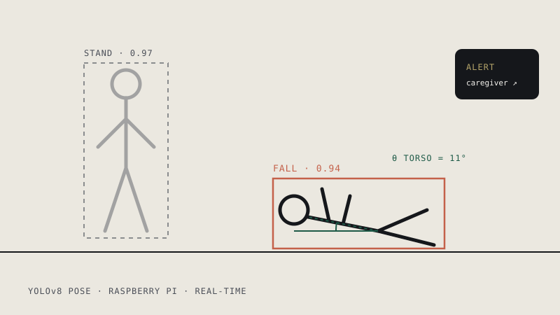

Steadymatch: Fall Recognition
A real-time fall-detection system on a Raspberry Pi built around an 11.2M-parameter YOLOv8 pose model. I engineered pose-based heuristics (torso angle, bounding-box geometry, normalized body position) to separate genuine falls from everyday movement, and the system sends an instant alert to caregivers when it detects one.